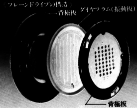
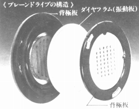
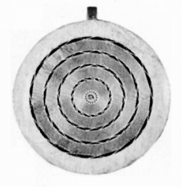

（トリオのカタログより）
（トリオのカタログより） トリオ/ケンウッドの動電全面駆動型
トリオ/ケンウッドの動電全面駆動型(同社は「プレーン・ドライブ」と呼んでいます）は、少数の例外を除き短命に終わったこのタイプのヘッドフォンとしては極めて珍しく、三回のモデルチェンジを行っています。しかしこの三世代のヘッドフォンは、同一系統のドライバーではなく、それぞれ違った構造のドライバーを採用しているようです。
�@KH-72/92
（トリオのカタログより）


（明るさを調整し振動板、磁石を見やすくしたもの）
第一世代であるKH-72/92のドライバーは、動電全面駆動型の代表機種であるヤマハのオルソダイナミック型とも、フォステクスのRP方式とも違うタイプのドライバーを採用しています。
なお、「Collectable Headphones」さんのブログ（2009/12/18分）によれば、（manufactured under licence from The Rank Organisation, London.）となっていたそうです。世界初の商品化された動電全面駆動型のヘッドフォンは、イギリスのWHARFEDALE（ワーフェデール）の「ID1」ですが、Rank社の資本にはワーフェデールも参加していたようですので、そちらの流れを汲む製品だったのでしょうか？
�AKH-73

（トリオのカタログより）第二世代であるKH-73のドライバーは、ヤマハやテクニカのような同心円状のコイルがプリンとされた振動板を採用していたようです。
�BKH-85
第三世代であるKH-85のドライバーの画像は、管理人所有の資料にはありませんが、海外サイトでフォステクスのRP方式そのままの画像が公開されています。